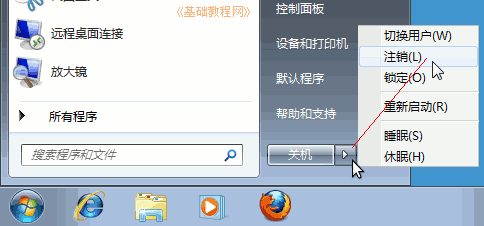

Windows7 基础入门教程
作者：TeliuTe 来源：基础教程网
十六、创建新用户 返回目录 下一课创建一个日常用户可以更好保证系统的安全，也便于多人使用；
1、创建用户
1）点“开始－控制面板”，进入系统管理窗口；
2）在出来的面板中，点击右边的“用户账户－添加或删除用户账户”；
3）在出来的用户列表下边，点击“创建一个新账户”；
4）在出来的对话框上面，输入用户名，然后点右下角的“创建账户”按钮，默认创建的是标准用户；
5）返回到用户中，就可以看到一个新的用户了；
6）点“开始－关机转到按钮－注销”，退出当前用户；

7）在登录界面上，选择新建的用户图标，点击进入；
8）点“开始”按钮，在旁边的菜单上就显示了用户的名称；
本节学习了创建新用户的基础知识，如果你成功地完成了练习，请继续学习下一课内容；
本教程由86团学校TeliuTe制作|著作权所有
基础教程网：>http://teliute.org/
美丽的校园……
转载和引用本站内容，请保留版权信息和本站链接。